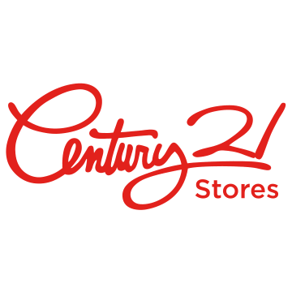
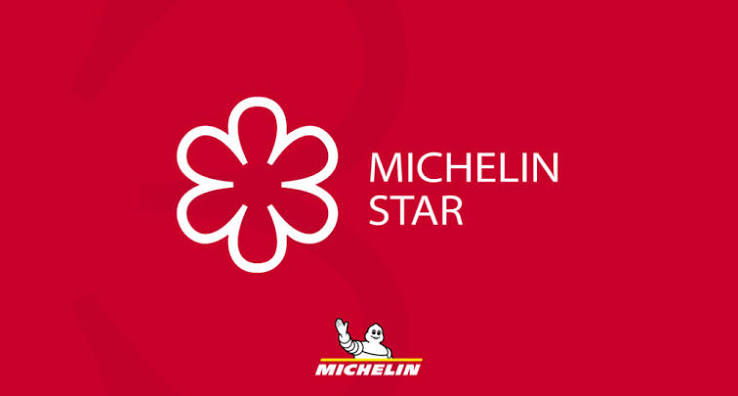
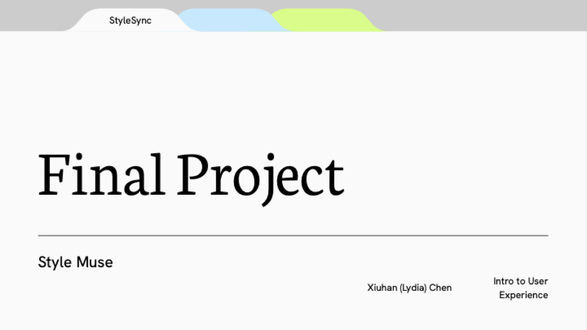

Graduate coursework at Columbia Business School, selected where the analysis produced a real recommendation.

Strategic Consumer Insight
Team of 5
Found that Gen Z's bad image of a 100-year-old retailer wasn't built on bad experiences — it was built on nobody having actually been inside.
Set out to test whether price would drive adoption of an AI research proxy. It didn't — trust did.

Built the LLM pipeline that turned 18,422 unstructured restaurant reviews into the finding that Michelin stars come down to execution, not ambience.

Solo project
Designed and built (not just mocked up) an AI stylist app, from a personal pain point through a working Lovable prototype.